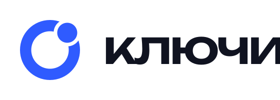

Внутри приложения
В шапке — знак 28 px. Единственный крупный текст — заголовок экрана.
Ключи · Орбита · Мобильная версия
От выбора отеля до двери номера.
Знакомый дизайн, единые правила.
Актуальная система мобильного приложения: айдентика, компоненты, состояния и движение. Примеры берутся из текущего прототипа.
Посмотреть визуальную основуOnest + Unbounded · #2F5BFF. Этот брендбук описывает реализованную мобильную версию с последними утверждёнными изменениями. Старые макеты и альтернативные концепции исключены из публикации.
Все текущие экраны ↗ · Живой UI kit ↗ · Контракт компонентов ↗
01 / Текущий интерфейс
Здесь показаны реальные экраны. Прокрутите превью, чтобы увидеть весь экран, или откройте его отдельно. Встроенные примеры используют отдельные данные.
Единый блок поиска, горячие скидки, история и персональный подбор.
Текущий компонент приложения → живой каталог → этот контракт. Архивные HTML-макеты больше не являются источником реализации.
Данные и интеграцииДемонстрационные цены, SMS, платежи, цифровой ключ и ответы ассистента не заменяют реальные интеграции.
02 / Айдентика
В шапке — знак 28 px. Единственный крупный текст — заголовок экрана.

На входе, заставке и носителях. Unbounded 500, строчные буквы; SVG подготовлен в кривых.
Белая версия. На фотографии — спокойная подложка, без потери силуэта.
Геометрия
Толщина кольца 0,1875D. Диаметр точки D/3. Ореол 0,06D. Канон — 45° от вертикали.
Охранное поле
Не меньше D/3 вокруг видимого знака. Минимум для знака — 16 px; полный логотип — 72 px.
Без декоративного шума
Точка — часть бренда, не универсальный маркер. Вкладки выделяются цветом и подложкой.
03 / Палитра
Кобальт направляет внимание на следующий шаг.
Отдельный тариф. Можно выбрать другой. Баллы «Ключей» доступны.
Баллы отеля и «Ключей» показываем раздельно.
Friendly Rate — зелёный тариф для подтверждённого отельера. Баллы отеля — нейтральная плашка, скидка — мятная; знак баллов Ключей для них не используется. Служебный цвет ошибки не заменяет брендовый акцент. Для мелкого текста используем контрастные роли; светлый muted — только для неактивных элементов.
04 / Типографика
До встречи
в «Ключах»
Unbounded 500 — заголовки, номер комнаты, крупные суммы. Onest 400/500 — пояснения, формы, подписи и действия.
Куда поедем?
Номер с видом на море
Выберите даты и гостей. Подберём доступные номера.
90 830 ₽ · 7 ночей
Отмена по условиям выбранного тарифа
| Стиль | Шрифт | Размер / строка | Пример |
|---|
Заголовок экрана — 26/32, трекинг −0,8 px, как в текущих экранах. Не повышаем насыщенность до 600–700. В суммах используются неразрывные пробелы и ровные колонки цифр.
05 / Интерфейс
16 px для контента, 20 px для шапки. Между блоками 12 px, между секциями 24 px. Ширина контента эталона — 375 px.
Сохраняем мягкую форму. Кнопка — радиус 16 px, высота 52 px. Ключ — 54 px. Тарифная карточка — радиус 20 px.
Высота 64 px, радиус 32 px, отступ 14 px. Матовое стекло и четыре раздела. Без дополнительной точки активной вкладки.

Используем фотографии соответствующего отеля и категории номера. Кадр показывает номер или пространство, а не абстрактный декор. Объект не растягиваем; под текстом используем локальное затемнение.
Происхождение копий записано в реестре. Права на публичное использование фотографий пока не подтверждены исходными материалами.
Единая библиотека SVG: сетка 24, линия 1,5, скруглённые окончания. Новые символы должны сохранять этот язык. Интерактивная область — минимум 44 × 44 px, даже у визуально небольшой иконки.
06 / Голос продукта
«Открыть дверь»
Действие доступно после заселения. До него ключ не показываем.
«Списать баллы»
В оплате брони — до 100% проживания и включённых услуг. В отдельной оплате услуги переключатель баллов убран.
«Оплата не прошла»
«Баллы не списаны. Попробуйте ещё раз». Ошибка объясняет, что произошло и что делать дальше.
На «вы», коротко, без восклицаний и давления. «Бронь», «поездка», «гость». Не обещаем лучшую цену, мгновенное заселение или награду, если это не подтверждено правилами.
07 / Движение
Длительности соответствуют реализации в interactions.tsx/css и onboarding/. При запуске один ключ с орбитой; три шага показывают управление номером, двойную выгоду и персональную подборку. Карточки второго шага собираются с разных сторон, третий шаг имеет собственную динамическую композицию.
| Событие | Длительность | Поведение | Статус |
|---|
Уменьшенное движение отключает вращение, сжатие и пространственные переходы; вкладки и тосты используют прозрачность 200 мс. Онбординг пропускает ожидание заставки и финала. Защищённые шторки и клавиатура требуют отдельной сверки. Хаптика остаётся справочным правилом для нативной версии.
08 / Живой UI kit
Успех — зелёный с галочкой. Ранний заезд и поздний выезд: «Добавлено». Оплата — отдельное состояние. Иконка и подпись остаются в одной строке.
Скидка — мятная, баллы — нейтральные, без знака баллов Ключей. Текущий уровень: белая карточка, кобальтовый акцент слева, зелёный статус. Таймлайн и гибкая высота.
Шапки прокручиваются; исключение — диалог отеля. Главное действие закреплено снизу, содержимое имеет отступ. СМС — шесть ячеек, PIN — четыре.
09 / Для разработки
Мобильный прототип включает поиск и бронь, пять состояний поездки, услуги, чаты, выгоды и профиль. Добавлены единые состояния «Добавлено», «Оплачено», «К оплате», ожидание и ошибка ключа. Покрытие и проверка: каталог текущих экранов · финальная проверка · отчёт QA.
Это брендбук и визуальная спецификация, а не работающий сценарий бронирования. Архивные референсы не публикуются. Мобильная версия 2.0 · 30 октября 2026. Актуальный контракт, компоненты и открытые решения собраны в пакете для разработки. Финальная проверка пользователем ещё открыта.